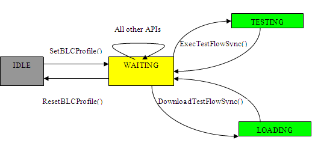

Batch/Lot Control
Batch/Lot control provides a solution and a set of APIs, with which you can write your own C/C++ program to supersede the current application model file and test program file.
You can use the APIs to perform almost all the functionalities provided by the test program and application model file(See Appendix 1: The Application Model/BLC Functionality Mapping Table).
BLC maintains the similar state control with application model.
- At the beginning of the BLC, an initialization API will set the SmarTest state to WAITING and the operation control buttons will show up.
- When downloading the testflow, the SmarTest state is changed to LOADING. Once the download is finished, the state is changed back to WAITING.
- When executing a testflow, the SmarTest state is set to TESTING and at the end of the execution, the status is set back to WAITING.
- At the end of the BLC, a termination API will reset the state to IDLE and the operation control buttons will disappear.

Two new concepts, BLC executable file and BLC input file, are introduced in this solution.
BLC executable file
The BLC executable file is a binary file compiled from the C/C++ program using BLC API. It can take the BLC input file as an argument in the execution. But this is not mandatory. You can develop a BLC executable without the BLC input file if you have your own parameter access approach (for example, via environmental variables).
BLC input file
BLC input file contains the entries that are used by the BLC executable file. The recommended BLC input file format is a plain text file, containing the <key, value> pairs typically. The standard format of BLC file looks like below:
PH_Driver_Location: /opt/hp93000/PH_libs/GenericHandler PH_Driver_Global_Config: /tmp/Global_handler_configuration Pre_Testflow: testflow1, testflow2 Normal_Testflow: testflow3 Post_Testflow: testflow4, testflow5, testflow6 Exec_Input_Location: /tmp/execute_input/log_processing Wafer_Map: wafermap1
The BLC input file could have arbitrary structure. If you use input files with other format, you need to develop your own input file parsing function. The recommended input file format can be validated and parsed correctly by the provided API evalBLCInputFile().
BLC APIs
According to the behaviors of the APIs, they are categorized as synchronous control command and data query commnad. The general usage of BLC APIs follows the same rule with HVM APIs.
According to the functionalities of the APIs, they can be divided into the following categories:
- Variable access API
- Input file access API
- Shared library access API
- Synchronous testflow execution API
- Special events handling API
- EDL logging API
- Wafer related API
- Test result display update API
- HVM execution event generation API
- Level control API
- Initialization and termination API
Advantages of BLC
Comparing to application model, the advantages of using BLC include:
- You can implement the same functionalities as the application model with high level programming language.
- You can organize the test logic in your own way. You can choose whether to maintain the level structure or not.
- You can execute multiple testflows for arbitrary times in the BLC.
- It is easy to debug a C/C++ program.
- The PH/EI shared libraries can be linked to BLC executable file directly.
- The synchronization between the BLC execution and the external operation is easy.
- BLC is independent of devices. This makes BLC a "generic" approach.
Functional changes
- Introduced in SmarTest 6.5.0
- SmarTest 7.1.0: GDF logging API's are obsolete.